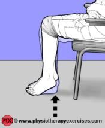

Ankle Pump Exercise
This exercise is to strengthen the muscles surrounding your ankle. Perform 10-15 repetitions of this exercise, and repeat for 3 sets total.
Equipment:
Sturdy Chair, heavy book (only needed for the progression)
*Note- You should feel the muscles on the front and back of your lower leg working during this exercise.
Instructions:
1. Find a sturdy chair to sit in.
2. Sit up straight, with your feet aligned under your knees.
3. Staying seated, roll onto your toes lifting your heels up. Then roll onto your heels lifting your toes and balls of your feet up.
4. This is 1 repetition.
Making it harder (progression):
1. Find a sturdy chair to sit in.
2. Sit up straight, with your feet aligned under your knees.
3. Place a heavy book (such as a textbook) in your lap.
4. Staying seated, roll onto your toes lifting your heels up. Then roll onto your heels lifting your toes and balls of your feet up.
5. This is 1 repetition.
Making it easier (regression):
1. Find a sturdy chair to sit in.
2. Sit up straight, your legs stretched out in front of you with your heels resting on the ground.
3. Point your toes down towards the ground, then lift them up towards you.
4. This is 1 repetition.

Arm Exercise
This exercise is to strengthen the muscles in the arms and shoulders. Perform 10-15 repetitions of this exercise, and repeat for 3 sets total.
Equipment:
Sturdy chair, empty gallon jug (or other weighted object)
*Note- You will feel the muscles in the front of your shoulders and arms working during this exercise.
Instructions:
1. Fill the gallon jug 50% full of water (or grab another similar weight object).
2. Start seated tall in the chair with your object in your lap.
3. With your arms straight in front of you, raise the object to chest height, and back down to your lap.
4. This is one repetition.
Making it harder (progression):
1. Fill the gallon jug 75%-100% full of water (or grab another similar weight object).
2. Start seated tall in the chair with your object in your lap.
3. With your arms straight in front of you, raise the object to chest height, and back down to your lap.
4. This is one repetition.
Making it easier (regression):
1. Fill the gallon jug 25% with water (or perform exercise without weight).
2. Start seated tall in the chair with your object in your lap.
3. With your arms straight in front of you, raise the object to chest height, and back down to your lap.
4. This is one repetition.
Spine Exercise
This exercise is to strengthen the muscles in your trunk (your abdomen and spine). Perform 10-15 repetitions of this exercise, and repeat for 3 sets total.
Equipment:
Sturdy chair, a short cup 4-6 inches in height, a soup can (only for progression), tall cup 8-10 inches in height (only for regression)
*Note- You will feel the muscles on the sides of your trunk working.
Instructions:
5. Place a short cup on the floor to one side of the chair.
6. Start seated tall in the chair.
7. Without twisting, lean to the side, grab the cup and return to sitting tall.
8. Lean to the opposite side, placing the cup on the ground and return to sitting.
9. This is one repetition.
Making it harder (progression):
1. Place a soup can on the floor to one side of the chair.
2. Start seated tall in the chair.
3. Without twisting, lean to the side, grab the can and return to sitting tall.
4. Lean to the opposite side, placing the can on the ground and return to sitting.
5. This is one repetition.
Making it easier (regression):
1. Place a tall cup on the floor to one side of the chair.
2. Start seated tall in the chair.
3. Without twisting, lean to the side, grab the cup and return to sitting tall.
4. Lean to the opposite side, placing the cup on the ground and return to sitting.
5. This is one repetition.